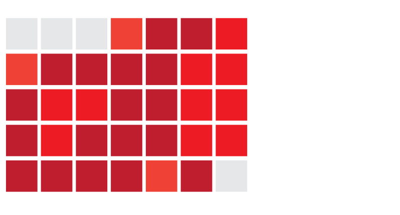

| Destinations: A visual representation of the tragic situation of accidents on the Mumbai Suburban Railway Network. (Thane to CST Mumbai, Andheri to Churchgate) |
Stations
An interactive visualizaiton to explore accidents and deaths at each stations on the Central and Western railway for 2012 to 2014.
Stations and hosptitals
A visualization of hospitals around the stations, the number of victims have been transferred there. The visualization also shows the number of accidents at the stations.
Timeline
A timeline of events related to the Mumabai Suburban railway, reported in the media from 2012 onwards. View charts and calendar representations in context of these reported articles.

Calendars and charts
Explore calendar and chart representations of the accidents and deaths across the Western and Central Railway, and filter and compare different aspects of the data.
Calendars and charts
Explore calendar and chart representations of the accidents and deaths across the Western and Central Railway, and filter and compare different aspects of the data.